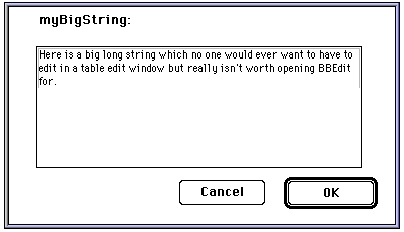

| TOP | UP: Border Crossings | NEXT: Applied Frontier |
Previous chapters (Chapter 32, Driving Other Applications and Chapter 34, Driving Frontier from Outside) have described Frontier's ability to drive other applications and to be driven by other applications, through the sending and receiving of Apple events. This chapter is about one particular integrated use of these abilities: editing a database object within another application.
Certain types of object, though editable within Frontier, might sometimes be more conveniently edited in another application. It is possible to copy such an object from Frontier, paste it into the other application, edit it there, copy it, and paste it back into Frontier; but instead of this, the process is automated, so that Frontier and the other application appear seamlessly integrated. From within Frontier, the object is directly opened for editing as a document in the other application; when, within the other application, the document is saved, its data replaces that of the original object in the Frontier database.
This integration requires that the other application be written in such a way as to notify Frontier automatically when saving a document that came from Frontier. At present, the following applications and object types support such integration: MacBird for card binaries; Script Debugger for AppleScript scripts; and BBEdit or PageSpinner for wptexts and strings.1 Nevertheless, we shall also suggest in this chapter how to extend the mechanism to other applications.
As we have already seen (Chapter 25, Dialogs), to edit a MacBird object, you select it and choose Edit with App from the Main menu; MacBird opens and comes to the front, displaying that object in its edit window. When you save a MacBird card from within MacBird, the card binary in the Frontier database is updated and the Frontier database is saved.
This model is generalized to other object types and other applications by way of the odbEditor suite. When you select a database object and choose Edit with App, the object's address is handed to odbEditor.edit() , which proceeds to seek an editor appropriate to the object's type from the odbEditor.editors table. Each entry in this table is itself a table, with four entries:
odbEditor.edit() begins by polling the canEdit() scripts in order, looking for one which will return true, meaning that its editor can edit the object. If a canEdit() script returns true, odbEditor.edit() looks in user.odbEditors to see if the user has already registered a choice of editor for this type of object. If so, and if that application is at the specified location on disk, the corresponding edit() script is called; otherwise, the list of creator codes in apps is used to try to set the pathname to an appropriate editor application, and if that doesn't work, the user is offered a chance to select an application in a file dialog.
So, to establish Script Debugger as your external editor for AppleScript scripts, select an AppleScript script and choose Edit with App; usually, Script Debugger will simply open the script directly (if Frontier has trouble finding a copy of Script Debugger it will ask to be pointed in the right direction). Similarly for BBEdit (or PageSpinner) and wptexts. If you were using BBEdit for wptexts and now wish to use PageSpinner instead, delete user.odbEditor.textEditor and change odbEditor.editors.Text.apps to read:
{'JyWs', 'R*ch'}
The important thing here is the order of the two items in the list. In fact, I switch between using PageSpinner and BBEdit often enough that I have a utility script to do it for me.
In the rest of this chapter, I discuss some further specifics of the implementation, and then talk about ways in which the mechanism can be extended.
The edit() script hands the AppleScript script to Script Debugger by way of an Apple event, and receives it back by way of system.verbs.traps.asDB.EDsv. The process is simple because the OSA serves as a bridge between Frontier and Script Debugger.
I have found that an error message in Script Debugger when the window is closed can be avoided if this line, in suites.odbEditor.editors.AppleScript.edit():
local (requestCloseEvents = true)
is changed so that true reads false.
When an AppleScript script from the database is exported to Script Debugger's context, calls to script objects in the Frontier database appear in "pipes" in Script Debugger's window, like this:
set x to |db.get|("user.name")
This is to prevent Script Debugger, which is not inside Frontier's context, from seeing such expressions as a syntax error. Nonetheless, the script can still be run and debugged in Script Debugger. If you add new calls to Frontier verbs in Script Debugger, surround the verb names with "pipes" manually. The "pipes" will be copied back into Frontier when the script is saved, but the script will still run.
The edit() script saves the object out to a textfile and tells the application to open the textfile. The textfile is placed in the Frontier Text Files folder in the UserLand folder inside your system folder's Preferences folder. The textfile is not deleted later on; it is up to you to clean up the folder from time to time.
Frontier maintains a correspondence between database objects sent to the external application for editing and their textfiles, by pairing them in lists kept at user.odbEditors.data.openfiles. If your computer crashes, or you quit Frontier, while a database object is being edited externally, these lists may get out of synch with reality, and your application may seem no longer to work correctly as an external editor for Frontier. Simply quit the application, clean out user.odbEditors.data.openfiles and the Frontier Text Files folder, and all will be well.
Once BBEdit has opened a textfile, you may use Save As to save it to a different location. Frontier is able to keep track because it is notified through system.verbs.traps.["R*ch"].FMod. This does not work with PageSpinner.
BBEdit implements syntax coloring based on the suffix of the filename (and the way you have set up its preferences). Frontier assumes that you want HTML syntax coloring, and establishes this by setting user.odbEditors.textFileExtension to ".html"; this causes Frontier to add ".html" to the name of the textfile. You can change this value, for example to "" if you don't want syntax coloring. If you delete this database object, Frontier will restore it and set it to ".html" again.
A weakness in the mechanism that maintains the correspondence between a database object and its textfile is that the name of the textfile is generated, in odbEditor.editors.Text.edit( ), by concatenating the name of the object's parent table with the object's own name (with a dot between them) and then truncating the result to 26 characters before appending ".html". The truncation is necessary because of the limit on the length of Mac OS filenames, but because it is performed by lopping off the end of the name, two database objects with names that differ only in their final characters can wind up being represented by the same textfile. This was first brought to my attention when a user complained that editing her database object Action_Learning1996.Actionlearning_abs12 caused a different and previously edited database object, Action_Learning1996.Actionlearning_abs11, to be overwritten. An obvious workaround was to shorten considerably the name of the table Action_Learning-1996.
A scalar might be too long to edit comfortably in a table edit window. It is possible to edit a string in BBEdit, but this might be regarded as overkill, and doesn't solve the problem for other types of scalars. We will describe how to create an entry in suites.odbEditor.editors that will set a dialog as the "external" editor for scalar types.
The entry is a subtable, suites.odbEditor.editors.string. (The name is important only in that it precedes text alphabetically; that way, our dialog will be used in preference to BBEdit for strings.) It has four entries:
on canEdit (addr)
local (typeList = \
{stringType, doubleType, longType, listType, recordType})
« extend the list as desired
local (type = typeOf (addr^))
return (typeList contains type)
You can edit more types by adding them to the typeList list; they need to be scalars that can be coerced to a string and back, because the dialog will deal only with strings.
on edit (addrObject)
scratchpad.tempObj = addrObject^
card.run(@odbEditor.editors.string.biggerAsk)
delete (@scratchpad.tempObj)
The card biggerAsk consists of four items: an OK button ("item1"); a Cancel button ("item2"); a large text edit field ("item3"); and a non-editable text ("item4"). The non-editable text has a recalculation script that runs when the card starts up:
nameOf (addrObject^) + ":"
The card table has a startcard() script:2
card.setObjectText ("item3", scratchpad.tempObj)
The Cancel button has an action script that runs when it is pressed:
card.close()
The OK button has an action script that runs when it is pressed:
try {addrObject^ =
coerceTo (card.getObjectText("item3"), typeOf (addrObject^))};
card.close()
coerceTo() is given in Example 10-2.
Now when you select a scalar of one of the specified types and choose Edit with App, a dialog appears in which you can edit the scalar. Figure 35-1 shows the dialog in action.
|
 |
Can any other applications act as external editors for Frontier database objects? Yes, but not so smoothly and automatically.
The external editing link to Script Editor and BBEdit works because the developers of those applications cooperated with UserLand, agreeing upon a notification mechanism whereby Frontier would be told through an Apple event when a file has been saved or a window has been closed. Other applications lack this notification mechanism. So even if you can drive an application to open a database object for editing, you have no automatic way to hand the edited result back to Frontier.
Still, if the other application has a macro language of its own and can drive Frontier, you can sometimes devise a satisfactory means of communicating data between them.
For example, I sometimes like to edit wptext objects in Nisus Writer. So I have a Frontier script (Example 35-2) which appends the currently selected wptext to the end of the current Nisus Writer document.
A special line, beginning with the word #entrySource, is prefixed to the text, so that Nisus will know later on where this piece of text goes in the Frontier database. When I'm done editing in Nisus, I run the sendToFrontier Nisus macro that was discussed as Example 34-1; it puts the pieces of text back into their wptext objects in Frontier.
Even if an application doesn't have a macro language, you may still be able to automate communication between it and Frontier. Consider, for instance, using NoDesktopCleanup and KeyQuencer3 along with its AESend extension. NoDesktopCleanup can "attach" a KeyQuencer script to any application's Save menu item, so that when you choose it, the script is triggered. Thanks to the AESend extension, that script can send an Apple event to Frontier. Since that is almost identically what choosing Save does in BBEdit or Script Debugger, you've effectively turned the application into an external editor for Frontier.
1. For Script Debugger, see http://www.latenightsw.com/. For BBEdit, see http://www.barebones.com/. For PageSpinner, see http://www.algonet.se/~optima/pagespinner.html.
2. Why are we setting the text edit field's text with a startCard() script instead of a recalculation script that runs when the card starts up? Because there seems to be a bug whereby a recalculation script truncates the text to 255 characters, defeating the whole purpose of the dialog. This is a pity, becauseaddrObject is visible to a recalculation script, but not to a startCard() script; thus, odbeditor.string.edit() must copy addrObject to a global from which startCard() can retrieve it.
3. For NoDesktopCleanup, see http://persoweb.francenet.fr/~alm/. For KeyQuencer, see http://www.binarysoft.com/kqmac/kqmac.html.
| TOP | UP: Border Crossings | NEXT: Applied Frontier |